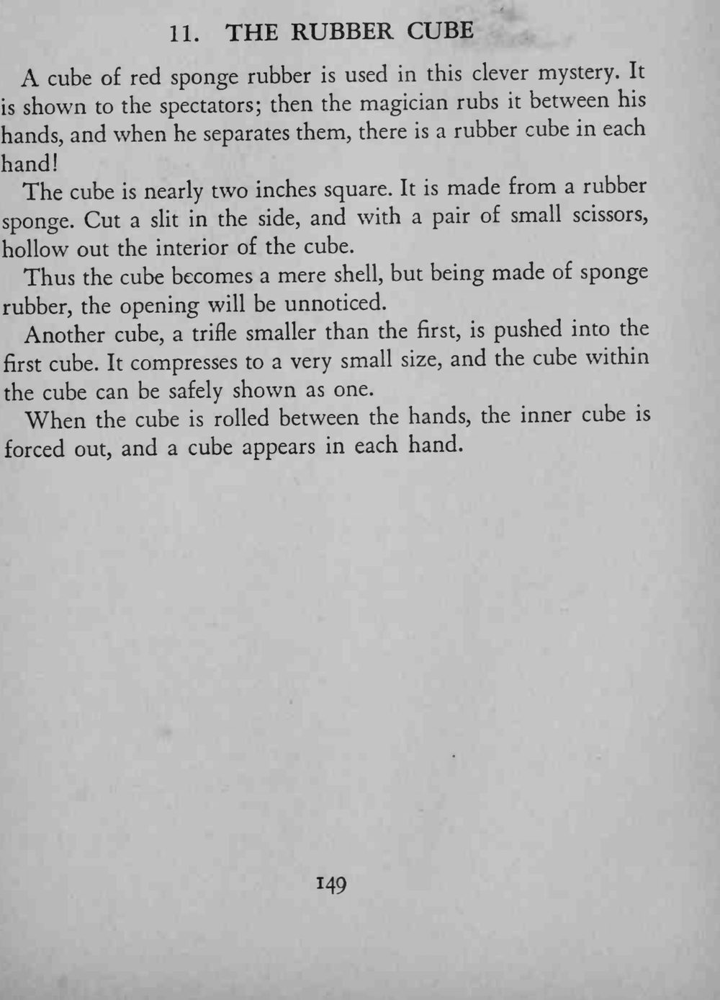
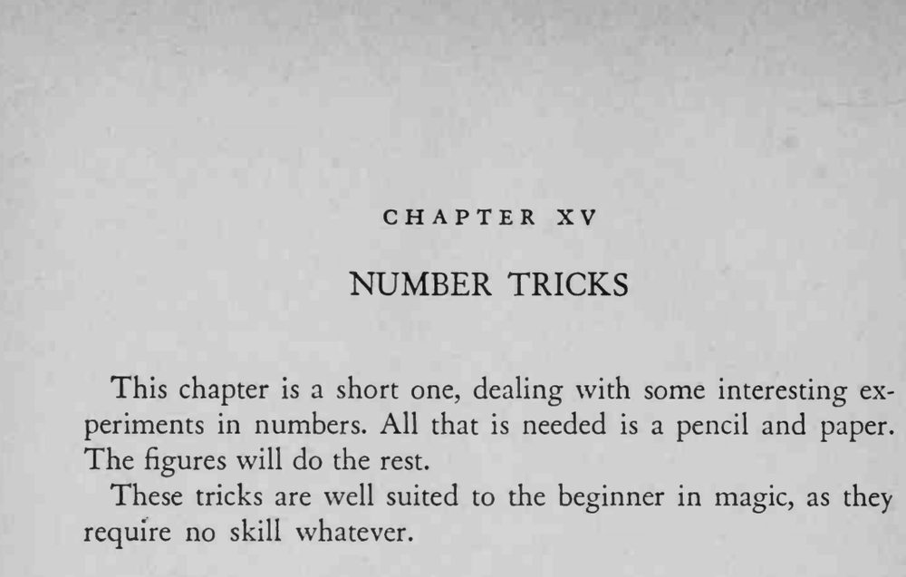

魔术师把一块红色海绵方块在两手间一搓，分开手时，每只手里各出现一块方块。
内层方块要略小、能压缩，塞进去后从外面不能看出鼓包。


A cube of red sponge rubber is used in this clever mystery. It shown to the spectators; then the magician rubs it between his hands, and when he separates them, there is a rubber cube in each hand! The cube is nearly two inches square. It is made from a rubber sponge. Cut a slit in the side, and with a pair of small scissors, hollow out the interior of the cube. Thus the cube becomes a mere shell, but being made of sponge rubber, the opening will be unnoticed. Another cube, a trifle smaller than the first, is pushed into the first cube. It compresses to a very small size, and the cube within the cube can be safely shown as one. When the cube is rolled between the hands, the inner cube is forced out, and a cube appears in each hand. This chapter is a short one, dealing with some interesting experiments in numbers. All that is needed is a pencil and paper. The figures will do the rest. These tricks are well suited to the beginner in magic, as they require no skill whatever.